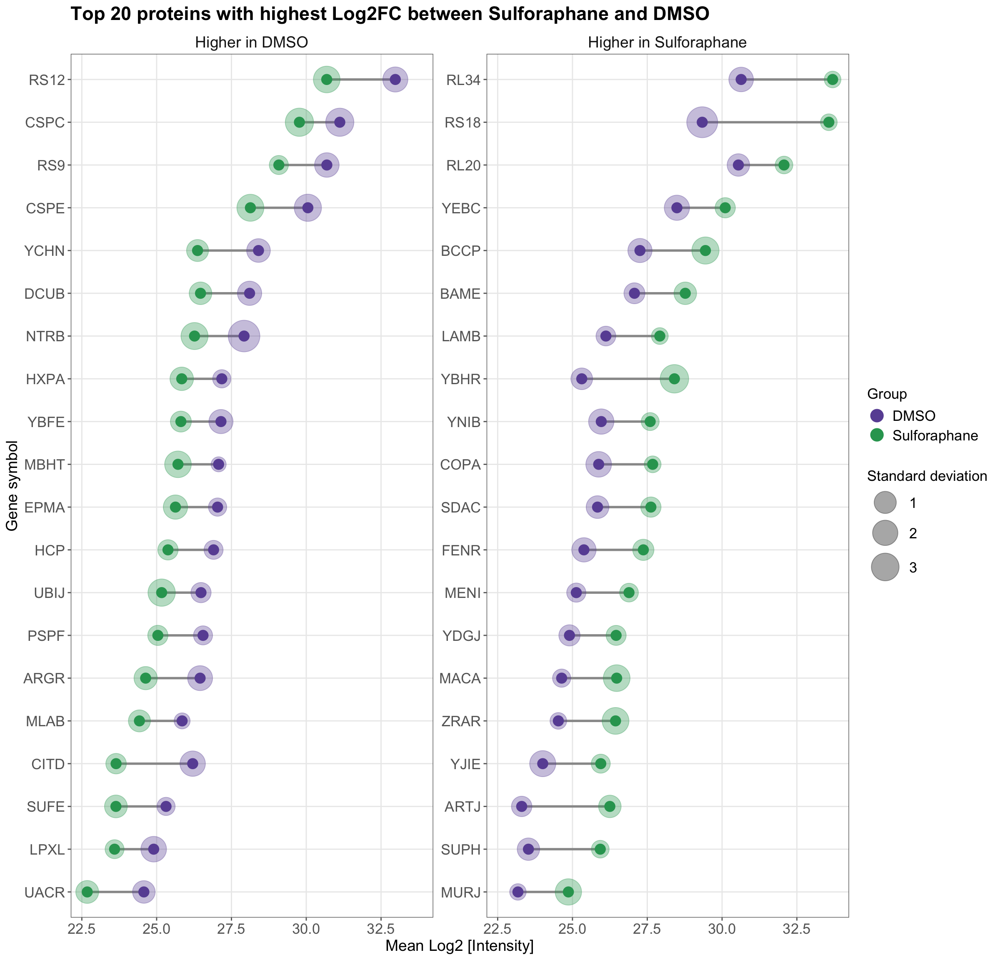

4.7 Plot overall intensity distribution per replicate
# Define colors for the labels
label_colors <- c("DMSO" = "#6a51a3", "Sulforaphane" = "#2ca25f")
# Start the plotting pipeline
protein_data_parsed %>%
# Format Reference names for better readability in the plots
mutate(Reference = case_when(
Reference == "DMSO_rep1" ~ "DMSO 1",
Reference == "DMSO_rep2" ~ "DMSO 2",
Reference == "DMSO_rep3" ~ "DMSO 3",
Reference == "DMSO_rep4" ~ "DMSO 4",
Reference == "Suf_rep1" ~ "Sulforaphane 1",
Reference == "Suf_rep2" ~ "Sulforaphane 2",
Reference == "Suf_rep3" ~ "Sulforaphane 3",
Reference == "Suf_rep4" ~ "Sulforaphane 4",
TRUE ~ Reference
)) %>%
# Start ggplot, map global aesthetics (x axis and fill color)
ggplot(., aes(x = Intensity, fill = Label)) +
# Add histogram layer with 40 bins and white borders
geom_histogram(bins = 40, color = "white") +
# Add labels and titles
labs(
title = "Log2-transformed protein intensity distributions",
x = "Log2 [Intensity]",
y = "Count",
fill = "Group"
) +
# Adjust y-axis to make bars touch the x-axis
scale_y_continuous(expand = c(0.01, 0)) +
# Use a minimal plot theme to start the customization
theme_minimal() +
# Use the above defined colors for the fill aesthetic
scale_fill_manual(values = label_colors) +
# Create a separate facet (subplot) for each Reference (replicate)
facet_wrap(~Reference, scales = "fixed", nrow = 2) +
# Further customize the theme
theme(
axis.text = element_text(size = 12, color = "#666666"),
axis.title = element_text(size = 13),
plot.title = element_text(size = 14, face = "bold"),
legend.title = element_blank(),
legend.text = element_text(size = 12),
legend.position = "bottom",
strip.text = element_text(size = 12),
panel.grid.minor = element_blank(),
panel.grid.major.x = element_blank(),
panel.border = element_rect(color = "#666666", fill = NA),
axis.ticks = element_line(color = "#666666")
)
4.7.1 Perform Principal Component Analysis (PCA)
# Reshape the data for PCA
pca_data <- protein_data_parsed %>%
select(Identifier, Reference, Intensity) %>%
pivot_wider(names_from = Identifier, values_from = Intensity) %>%
column_to_rownames(var = "Reference") %>%
select(where(~ !any(is.na(.)))) %>%
select(where(~ var(.) > 0))
# Perform PCA
pca_result <- prcomp(pca_data, center = TRUE, scale. = TRUE)
# Get the percentage of variance explained by each principal component
pca_variance <- (pca_result$sdev^2) / sum(pca_result$sdev^2) * 100
# Create a data frame for plotting
pca_df <- as.data.frame(pca_result$x) %>%
rownames_to_column(var = "Reference") %>%
mutate(Label = if_else(str_detect(Reference, "DMSO"), "DMSO", "Sulforaphane"))
# Calculate convex hulls for each group (optional)
# These are used to draw polygons around the groups in the PCA plot
hulls <- pca_df %>%
group_by(Label) %>%
slice(chull(PC1, PC2)) %>%
ungroup()
# Plot PCA results
pca_df %>%
# Format Reference names for better readability in the plots
mutate(Reference = case_when(
Reference == "DMSO_rep1" ~ "DMSO 1",
Reference == "DMSO_rep2" ~ "DMSO 2",
Reference == "DMSO_rep3" ~ "DMSO 3",
Reference == "DMSO_rep4" ~ "DMSO 4",
Reference == "Suf_rep1" ~ "Sulforaphane 1",
Reference == "Suf_rep2" ~ "Sulforaphane 2",
Reference == "Suf_rep3" ~ "Sulforaphane 3",
Reference == "Suf_rep4" ~ "Sulforaphane 4",
TRUE ~ Reference
)) %>%
# Start ggplot, map global aesthetics (x and y axes, color, and point labels)
ggplot(aes(x = PC1, y = PC2, color = Label, label = Reference)) +
geom_point(size = 6) +
# Draw convex hulls around the groups
geom_polygon(
data = hulls, aes(x = PC1, y = PC2, fill = Label, color = Label),
alpha = 0.15, color = NA, show.legend = FALSE
) +
# Add text labels to the points
geom_text(vjust = -1.3, hjust = 0.5, size = 3.5, show.legend = FALSE) +
# Add labels and titles
labs(
title = "Principal component analysis (PCA) of Log2-transformed protein intensities",
x = paste0("PC1 (", round(pca_variance[1], 1), "% variance)"),
y = paste0("PC2 (", round(pca_variance[2], 1), "% variance)"),
color = "Group"
) +
# Use the above defined colors for the color and fill aesthetics
scale_color_manual(values = label_colors) +
scale_fill_manual(values = label_colors) +
# Use a minimal plot theme to start the customization
theme_minimal() +
# Further customize the theme
theme(
axis.text = element_text(size = 12, color = "#666666"),
axis.title = element_text(size = 12.5),
plot.title = element_text(size = 14, face = "bold"),
legend.title = element_text(size = 12),
legend.text = element_text(size = 12),
legend.position = "right",
panel.grid.minor = element_blank(),
panel.border = element_rect(color = "#666666", fill = NA),
axis.ticks = element_line(color = "#666666")
)
4.7.2 Identify and plot proteins with highest fold-change between conditions
# Compute fold-change per gene between Sulforaphane and DMSO
fold_changes <- protein_data_parsed %>%
group_by(Gene, Label) %>%
filter(n() >= 2) %>% # keep only labels with >=2 replicates
ungroup() %>%
group_by(Gene) %>%
filter(n_distinct(Label) == 2) %>% # keep only proteins present in both groups
summarize(
DMSO = mean(Intensity[Label == "DMSO"], na.rm = TRUE),
Sulforaphane = mean(Intensity[Label == "Sulforaphane"], na.rm = TRUE),
.groups = "drop"
) %>%
mutate(
Log2FC = Sulforaphane - DMSO, # already log2-transformed
) %>%
# Prepare a column indicating in which condition intensity is higher
# This column will be used for faceting the plot later
mutate(higher_in = case_when(
Log2FC > 0 ~ "Higher in Sulforaphane",
Log2FC < 0 ~ "Higher in DMSO",
TRUE ~ "No change"
)) %>%
arrange(desc(Log2FC))
# Extract top 20 proteins with highest absolute Log2FC in each condition
top_proteins_DMSO <- fold_changes %>%
filter(higher_in == "Higher in DMSO") %>%
slice_max(order_by = abs(Log2FC), n = 20)
top_proteins_sulforaphane <- fold_changes %>%
filter(higher_in == "Higher in Sulforaphane") %>%
slice_max(order_by = abs(Log2FC), n = 20)
# Combine the top proteins from both conditions
top_proteins_both <- bind_rows(top_proteins_DMSO, top_proteins_sulforaphane)
# Prepare data for plotting
plot_data <- protein_data_parsed %>%
group_by(Gene, Label) %>%
summarize(
Mean = mean(Intensity, na.rm = TRUE),
SD = sd(Intensity, na.rm = TRUE),
.groups = "drop"
) %>%
# Inner join the current data frame with the top proteins to keep only those
inner_join(top_proteins_both[, c("Gene", "higher_in")], by = "Gene")
plot_data %>%
# Start ggplot, map global aesthetics (x and y axes, color, and group)
# Also, reorder genes based on their mean intensity for better visualization
ggplot(aes(x = reorder(Gene, Mean), y = Mean, color = Label, group = Gene)) +
# Add lines connecting the points of the same gene
# (needs 'group' aesthetic for the correct behavior)
geom_line(color = "#999999", linewidth = 1, show.legend = FALSE) +
# Add "shadow" points representing the standard deviation.
# They should be behind the main points, so add them first.
geom_point(aes(size = SD),
position = position_dodge(width = 0.5), alpha = 0.35,
show.legend = TRUE
) +
# Add points for each condition.
geom_point(position = position_dodge(width = 0.5), size = 4, show.legend = FALSE) +
# Refine size scale for the SD points for better visibility
scale_size_continuous(range = c(6, 13), breaks = c(1, 2, 3)) +
# Flip coordinates. What is mapped to x axis goes to y axis and vice versa.
coord_flip() +
# Add labels and titles
labs(
title = "Top 20 proteins with highest Log2FC between Sulforaphane and DMSO",
x = "Gene symbol",
y = "Mean Log2 [Intensity]",
size = "Standard deviation",
color = "Group"
) +
# Use the above defined colors for the color aesthetic
scale_color_manual(values = label_colors) +
# Use a minimal plot theme to start the customization
theme_minimal() +
# Create a separate facet (subplot) for each condition where intensity is higher
facet_wrap(~higher_in, scales = "free_y", nrow = 1) +
# Further customize the theme
theme(
axis.text = element_text(size = 13, color = "#666666"),
axis.title = element_text(size = 14),
plot.title = element_text(size = 17, face = "bold"),
legend.title = element_text(size = 13),
legend.text = element_text(size = 13),
legend.position = "right",
legend.key.size = unit(1.2, "lines"),
strip.text = element_text(size = 14),
panel.grid.minor = element_blank(),
panel.border = element_rect(color = "#666666", fill = NA),
axis.ticks = element_line(color = "#666666")
) +
guides(color = guide_legend(
override.aes = list(size = 5, alpha = 1)
))